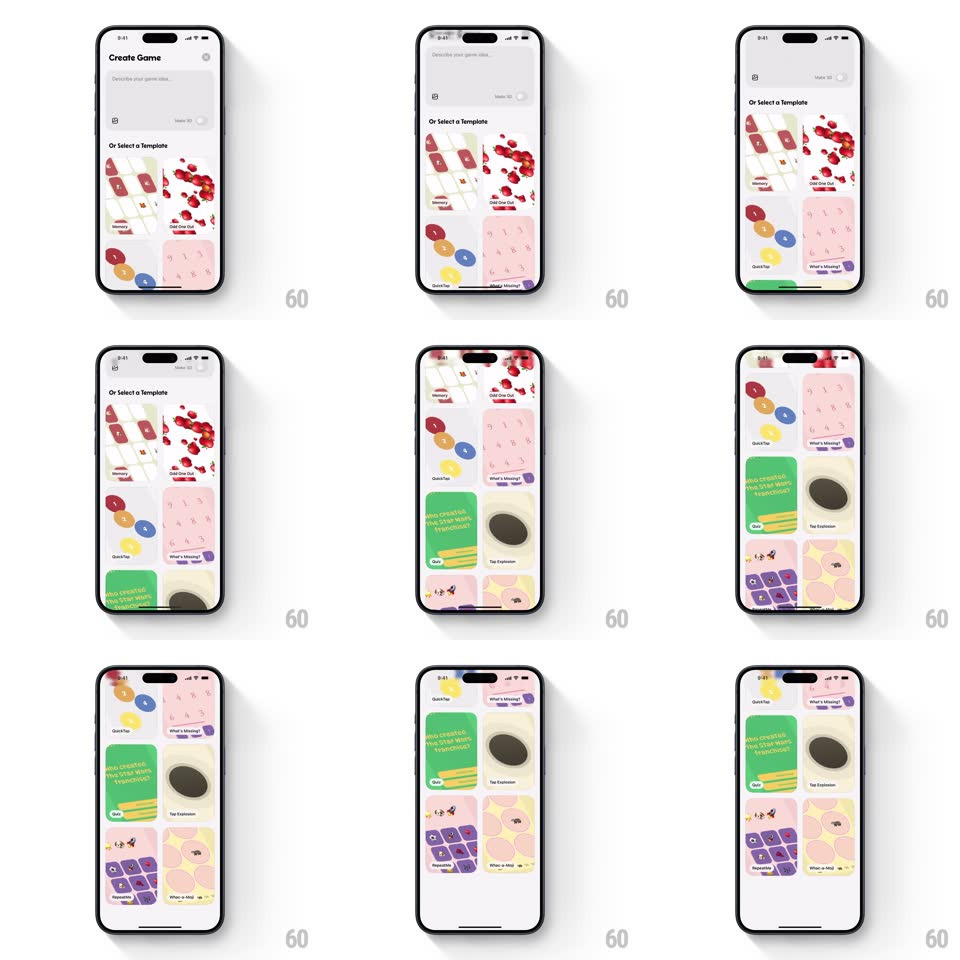

Media
Frame-by-frame

Rebuild this interaction 1:1: Spielwerk's template gallery - a physics-based vertical scroll through a staggered two-column grid of colorful game template cards under the "Create Game" header.

Rebuild this interaction 1:1: Spielwerk's template gallery - a physics-based vertical scroll through a staggered two-column grid of colorful game template cards under the "Create Game" header. ## Integration Integration: stack-agnostic spec - springs given as stiffness/damping, timed motions as duration + curve; map every value to your framework and animation library of choice. ## Scene "Create Game" sheet: a prompt field up top, then "Or Select a Template" over a masonry grid of template cards (Odd One Out, QuickTap, What's Missing, Quiz, Tap Explosion, Memory) in two staggered columns. ## Motion spec Pattern: momentum scroll with staggered columns. - Scroll: the grid scrolls vertically with natural momentum and rubber-banding at both ends (overscroll 60pt, spring back ~340/24, 300ms). - Columns: the two columns are offset by half a card and track the scroll with a slight lag difference (trailing column delayed ~5%) so they feel physical, not rigid. - Entry: cards stagger in on first load (scale 0.92 -> 1 + fade, 250ms each, 40ms per card in reading order). - Tap: a card presses (scale 0.96, 100ms) and springs back on release (spring ~420/20). ## Calibration - Column lag is subtle - a few points of offset, never a visible split. - Momentum decays with standard scroll physics; no paging or snapping. ## Reduced motion Instant column tracking; entry fades only. ## Don't miss - The masonry offset is constant - cards do not reflow during scroll. - The header and prompt field stay pinned; only the grid scrolls.